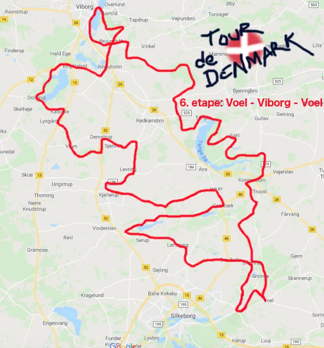

6. etape: Voel – Viborg – Voel

Tema: Tour de Danmark
Der er ingen tvivl om, at 6. etape er Tour de Danmarks kongeetape. Med 200 km er det turens længste. Og ikke uventet, blev det Squadra Moltenis mest erfarne rytter Tigeren fra Voel Per Sandahl, der måtte træde i karakter – og køre sejren hjem.


Nu har jeg siddet og slappet af midt i feltet på de første 5 etaper. Så i dag, hvor jeg har hjemmebane, der skulle den have én over nakken – så jeg kunne komme hjem og få lidt hjemmebag, fortæller en træt, men glad Per Sandahl.
Voel – Viborg – Voel er en ekstrem hår rute. Et helvede på jord. Floder skal krydses og den ene bakke efter den anden skal bestiges. Opad, opad og atter opad. Og selv den ikonisk Svostrup Kro, hvor de laver en ualmindelig dejlig Wienersnitzel, måttet passeres uden besøg.
Jeg havde hverken gode ben eller lunger. Men 200 km kører jo ikke sig selv – og hjem til dejlig kage, dét skulle jeg. Og for pokker hvor bliver det godt med en hviledag i morgen, fortæller Per da han kom i mål efter godt 5 timer i sadlen.
Forza Per Sandahl
Forza Molteni
6. Etape Voel – Viborg – Voel (200 km)
1. Per Sandahl, Squadra Molteni
Klassement:
1. Per Sandahl, Squadra Molteni
2. Jens Langergaard, Squadra Molteni
3. Kristian Blume, Squadra Molteni
4. Svend Seegert, Squadra Molteni
5. Niels Bjørnsteen, Squadra Molteni
Hold:
1. Squadra Molteni